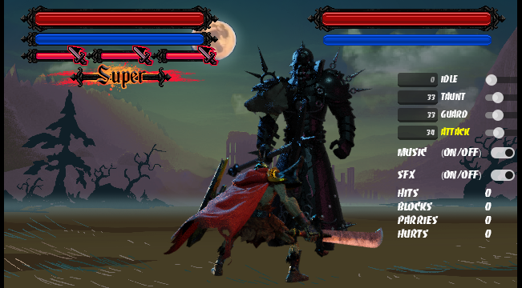
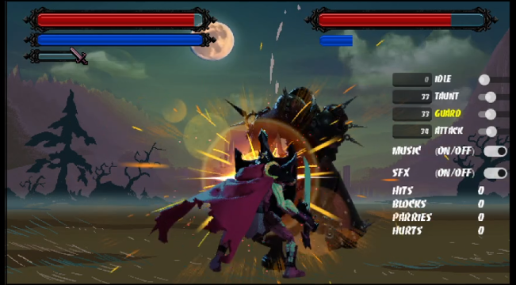
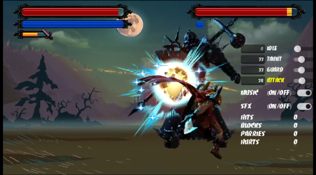
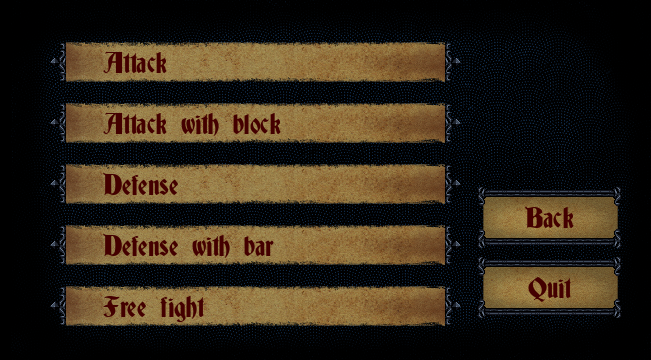
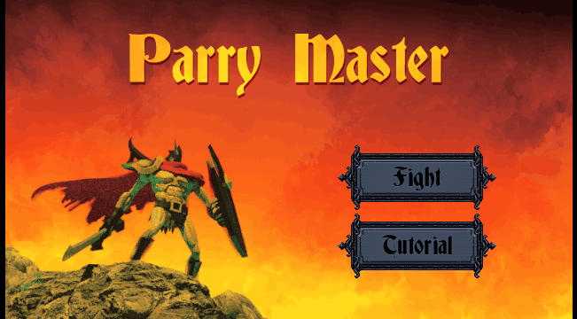

Welcome to the Inner SanctumParry Master is a simple fighting game. Survival depends on your ability to read opponent movements and deflect incoming strikes with perfect precision. The core mechanic revolves around the Perfect Guard. A successful parry doesn't just block damage -- it opens up a "Critical Window" where the player can deliver devastating counter-attacks.
-- Battle Chronicles (screenshots) --





Latest Updates: |
|